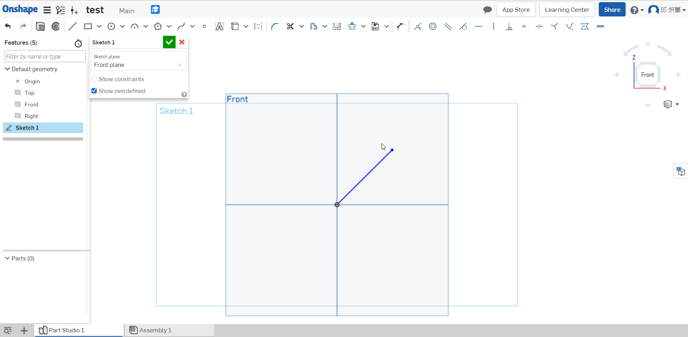
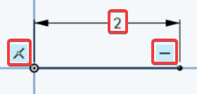
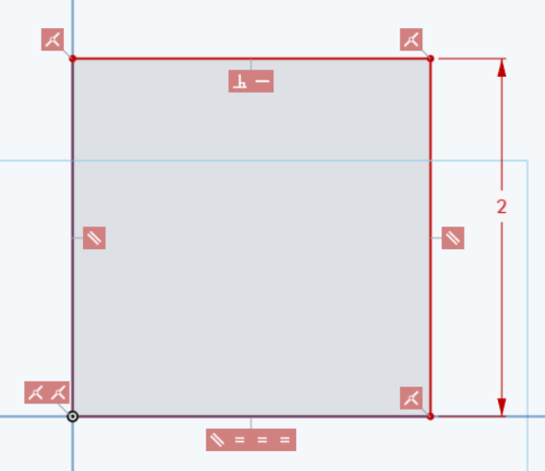
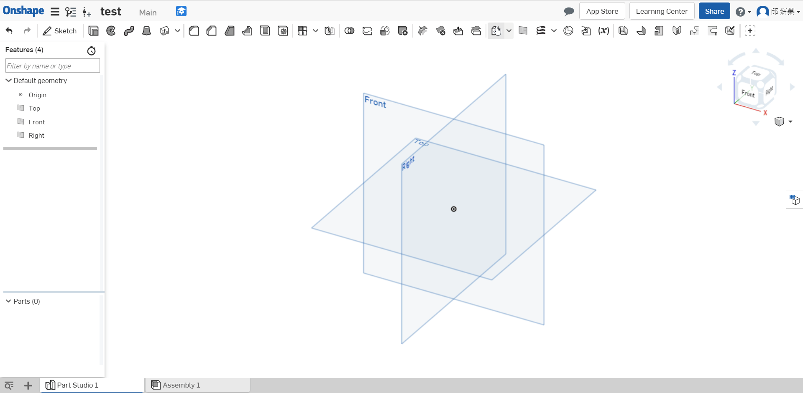
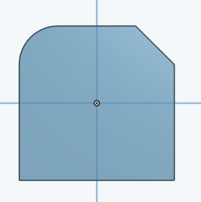

OnshapeWeek2
Week2 Lesson Plan
介紹3D模型

- 介紹設計意圖
- 設定尺寸與約束
- 自動推理
- 繪製精確的零件
- 草圖練習
- 使用及建立平面
- 建立圓角嶼倒角
- 使用多個草圖區域
- 基本零件
- 設計意圖 - 以時鐘當範例

無論手有多短，手始終都應該位於時鐘中心

數字應該始終與鐘面的中心距離相等，如果我將其中一個數字移至靠近中心，所有數字應該更接近

數字應該始終有一樣的高度，如果我使其中一個數字變大，剩下的的數字應該也要變大

- Dimensions & Constraints in 2D Geometry (2D幾何的尺寸與約束)

隨便畫一條直線，在將線的末端拖移到原點正上方，使得線以橙色的點顯現


如果想要將側邊彼此相等，選擇四條線，在按上方的 " = "

如果不想將方形拖移到任何尺寸，可用尺寸約束他

畫一個原在方形旁邊並相切

如果希望圓中心點與頂點邊緣對齊，可以用水平約束

定義圓的大小

如果想看自己增加的約束可以將Show constraints的選項打勾

- 單位
可以改長度、角度、質量的單位


- 按P可以隱藏或取消隱藏平面
- 總結
Let’s take a second to reflect(反映) what we learned in this lesson.
1. We learned about how dimensions(尺寸) and constraints(約束) help define design intent(設計意圖).
2. We learned how to make accurate(準確) parts using:
a. different extruding options
b. planes
c. fillets and chamfers
d. multiple sketch regions
Next week we will learn about multi-body parts(多實體), where design intent will become even more important!
Week2 Homework
Week2 Assessment
Q : What is design intent(設計意圖)? Describe(描述) in your own words.
A : Design Intent is the practice of developing your project’s(項目) objectives(目標) and requirements(要求) even before working on your design.
Q : What is the difference between sketch entities(實體) that are colored blue, black, and red?
Blue means it is underconstrained(不受約束), black means it is fully constrained(完全約束), and red means it is overconstrained(過度約束).



Q : What is automatic inferencing(自動推理), and how is it utilized(利用)?
A : When Onshape automatically assigns(指定) constraints to sketch entities while sketching. It can be activated by(激活) hovering over an existing entity, or temporarily(暫時) turned off by selecting the [shift] key
Q : Which feature is this and what is it used for:plane ?
A : This is the plane tool, used to create new planes in addition to(除了) the default
Top/Right/Front planes.

Q : How are fillets and chamfers similar? How are they different?
A : They are the same in that both features are applied to edges only, they are different in that a fillet creates a round profile, and a chamfer creates a flat profile.
左邊為圓角，右邊為倒角

OnshapeWeek1 << Previous Next >> OnshapeWeek3